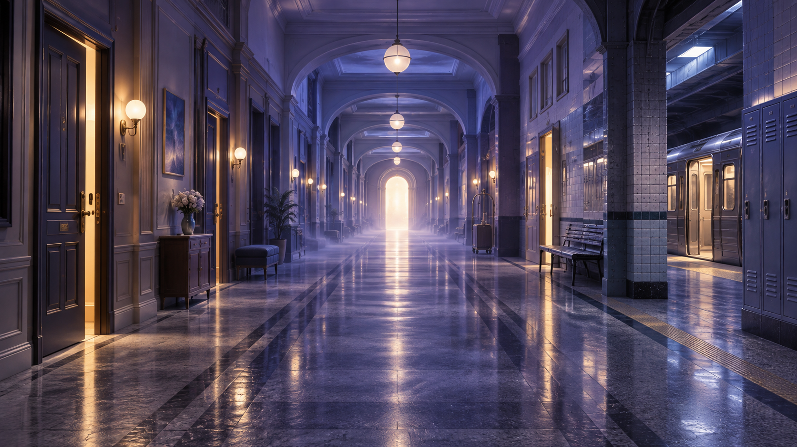

ROOM 01
Everything looks familiar. Almost.
CURATORIAL PRINCIPLE 01
Dreams in this room are connected by disorientation — not by identical images.
The familiar world is beginning to dissolve.
WALK INTO THE FAMILIAR